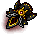
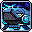
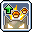
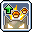
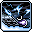

Buccaneer Basics
This page contains an overview of the class and how to get started with it. This page assumes you are already familiar with Maplestory (gear, grinding, general progression).
If you're going to read anything, at least read the content on this page.
About the classs
Buccaneer is a branch of the Explorer Pirates that uses

Knuckles and
 Wrist Bands as
their primary and secondary weapons respectively. The Buccaneer is generally characterized by its
close ranged attacks, ability to deal consistent amounts of damage with its trademark skill
Lord of the Deep, incredible mobility around the
fight, and low barrier to entry making it a
popular choice as a secondary character.
Wrist Bands as
their primary and secondary weapons respectively. The Buccaneer is generally characterized by its
close ranged attacks, ability to deal consistent amounts of damage with its trademark skill
Lord of the Deep, incredible mobility around the
fight, and low barrier to entry making it a
popular choice as a secondary character.
However, that doesn't mean Buccaneer isn't fit to be your main character! While it may be simple to deal damage to monsters in a boss fight, mastering all of the different movement abilities takes time and effort. An experienced Buccaneer player is constantly moving around the boss and dodging attacks while managing to dish out loads of damage, resulting in a very flashy and satisfying playstyle.
Why choose Buccaneer?
Buccaneer is an all-rounder class that excels in all stages of the game, from start to end.
Advantages of playing a Buccaneer
Simple but effective playstyle
Outside of burst and mobility skills, Buccaneer's bossing kit consists of 1 active skill:
Octopunch. All other bossing skills ( 
 )
are passive skills that are either always on or activate automatically when conditions are fulfilled.
)
are passive skills that are either always on or activate automatically when conditions are fulfilled.
More mobility skills than collective player IQ
Buccaneer is one of the most mobile classes in Maplestory, and some would argue is the most mobile. It has a wealth of mobility skills and techniques that can be applied to just about every bossing situation.
Advanced Dash and Corkscrew Blow give a Buccaneer player fine motor control to dodge, duck, dip, dive and dodge while Serpent Vortex and Lightning Form teleport can cover large distances in an instant. And for a bonus, you can chain together Advanced Dash with the standard jump to go really far (link to be added).
Chaining all these skills together makes Buccaneer look like it's dancing around the boss, while almost never dropping damage.
Straightforward and safe burst
Buccaneer's burst is very easy to execute:
-
Activate your burst skills and buffs


 -
now
made easy with the Buff Sequence!
-
now
made easy with the Buff Sequence!
- Use Unleash Neptunus if available
- Throw your three Lightning Form balls
- Use Howling Fist and dump any available Serpent Vortex charges
Unique party utility
Buccaneer has two party utility skills:
-
Pirate's Banner provides a stat boost to all party members while also placing a 25%
IED debuff on the boss, provided the banner is touching them. This works out to about 3-4% FD for
the entire party!
- Time Leap is one of the most unique utility skills in the game. When used, it resets the coowldown of many skills (but not every skill) across the entire party. This can greatly influence a boss fight, for example getting another Critical Bind/Shadow Rain out of a Zero or Howling Storm from a Mo Xuan.
Low barrier to entry
Buccaneer has innately high IED (
) and
critical rate (
 
) thanks to its passive skills, making it very easy to get started on your Buccaneerin' journey. This
means you can spend less time worrying about your setup and more time punching bosses!

) thanks to its passive skills, making it very easy to get started on your Buccaneerin' journey. This
means you can spend less time worrying about your setup and more time punching bosses!
Challenges a Buccaneer faces
"Boring" playstyle
On the other side of the coin, Buccaneer's simple playstyle may prove to be a bit boring to some. It's certainly not as APM-intensive as something like Blaster or Cadena, nor do you have to juggle multiple cooldowns like Adele or Kain.
Skills being mostly blue in colour also lends itself to the 'one-dimensional' complaint. (look for clip of all blue skills/burst)
Heavy off-burst damage profile
Buccaneer's reliance on dealing consistent amounts of damage over time can sometimes be a double-edged sword. In bosses like Lucid, Gloom, Guardian Angel Slime, Kalos and Kaling, burst windows are much more favourable, making Buccaneer relatively weaker in those boss fights.
This statement is true before the 2-minute patch. It will be revisited afterwards.
Poor farming effenciency in the early-mid game
Past level 260, Lord of the Deep struggles to one-shot monsters in Grandis. This makes farming very difficult for Buccaneers before Sol Janus is at a high level.
Allergies to literacy...
Frequently Asked Questions
Q: Does
Lord of the Deep have 100% uptime?
A:
As of the Destiny update, it now has a 100% uptime, provided you are able to defeat monsters with
one tick of the skill. It will always have 100% in boss fights. If you struggle to maintain
permanent uptime, please double-check that you are one-shotting monsters and not lagging.
Lord of the Deep is allowed to proc 100 times before it expires. When you are hitting a boss monster, three activations of the skill count as one, allowing you to proc 300 times.
It also has a sixty second cooldown which can be reduced in 3 ways:
- Killing 40 mobs will reduce the cooldown by ten seconds.
- Deactivating the skill will reduce the cooldown by 6 seconds for every ten remaining hits you have.
- Stimulating Conversation will reduce the cooldown by 50%.
Q: Why do we boost
Corkscrew Blow in the V-Matrix?
A: There are five recommended skills to boost (

 );
Corkscrew Blow just happens to be the next best choice to fill the sixth slot.
Other skills like Static
Thumper and Turning
Kick are not utilized after 5th job. It's definitely more of a "less bad" situation.
);
Corkscrew Blow just happens to be the next best choice to fill the sixth slot.
Other skills like Static
Thumper and Turning
Kick are not utilized after 5th job. It's definitely more of a "less bad" situation.
Q: Which Special Skill Ring should I use?
A: Ring of Restraint is the best ring of all time. It's the Michael Jordan of
Maplestory.
Q: Do I need critical rate for bossing?
A: Nope
Q: Do I need critical rate for bossing?
A: Nope
Basic Mechanics
I'm super cool zoom zoom
Advanced Mechanics
Lightning form go brrr